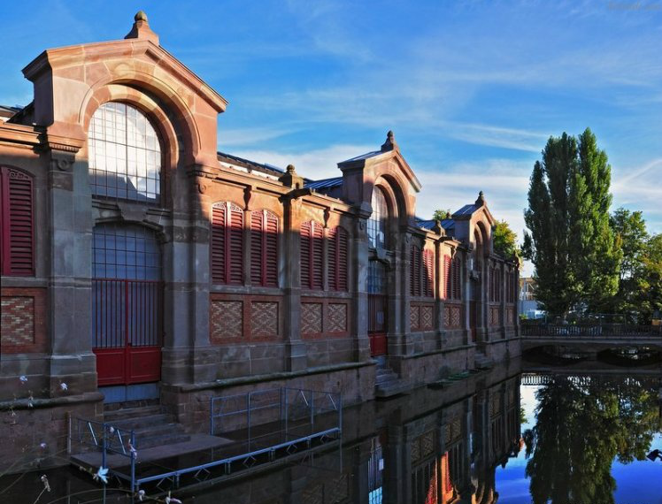
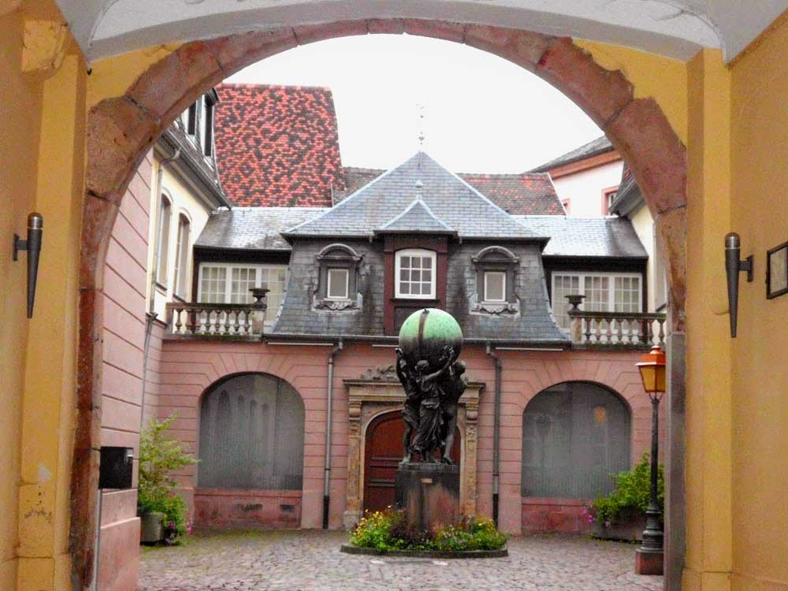

Ельзас, Франция
Город Кольмар относится к провинции Эльзас, которая всегда была камнем преткновения с соседними государствами. Не просто так, в архитектуре, культуре, кухне и других сферах жизни так много всего немецкого. Местные жители всячески демонстрируют свою принадлежность к Франции, но, тем не менее, большинство разговаривает на немецком диалекте.
Кольмар - один из самых красивых городков Эльзаса. Старинные улочки и мостовые, домики в стиле фахверк, древние каменные здания – все это создает неизгладимое впечатление. Кроме этого, Соlmar –столица эльзасских вин, недаром именно отсюда берет свое начало Route du Vin - Винная дорога.
Добраться в прекрасный Кольмар можно от городов Страсбурга или Базеля (Швейцария). Если добираться общественным транспортом, то доехать туда можно на поезде, минут за 30.А на машине – порядка 90 км от Страсбурга.
Кольмар расположен в равнинной части провинции, на берегу реки Лош. Он примерно одинаково отдален от швейцарского Базеля и французского Страсбурга.
Кольмар настолько гамоничен, что все туристы уезжают из него под сильнейшими впечатлениями. Извилистые улицы старого города, каналы и цветные фасады зданий формируют ни на что не похожий «фирменный стиль» Кольмара. Его иногда даже называют музеем под открытым небом.
Внутри старого города удивительным образом прижились разнообразные стили архитектуры. Здесь легко можно найти шедевры ранней готики, барокко, рококо, классицизма и наследие эпохи возрождения. Вокруг старого города архитектурная картина более целостная, так как большинство зданий относятся к эпохе возрождения.
Помимо «каменных» достопримечательностей Кольмар интересен туристам еще по нескольким причинам. Кольмар — самый сухой город Франции, что способствует развитию виноделия. Вина этого региона преимущественно белые и игристые. В августе в Кольмаре проводят праздник вина, с танцами, концертами и, конечно, дегустацией. Кстати, праздник вина — это не единственный фестиваль, проводимый в Кольмаре. Например, в сентябре в Кольмаре проходит ежегодный джазовый фестиваль, в октябре — кинофестиваль.
Главным музеем города Кольмара является музей Унтерлинден. В стенах старинного здания собрана богатая коллекция искусства различных эпох, включая барокко и возрождение. Кстати, здание, в котором расположен музей, является Доминиканским монастырем 13 века. Как и у всех музеев, в Унтерлинден есть свой главный экспонат, обеспечивший мировую славу. Это Изенгеймский алтарь работы Маттиаса Грюневальда.В Унтерлинден выставлены картины, оружие, архиологические находки, старинная мебель и многое другое. Фотографировать можно, без вспышки.
Еще один музей города Кольмар - Музей Бартольди. Этот музей, как можно понять из названия, полностью посвящен личности Бартольди — автору Статуи Свободы. В музее представлены различные картины, наброски, скульптуры, а так же личные предметы и мебель Бартольди. Музей открыли именно в Кольмаре, потому что художник и архитектор здесь родился.Как известно, Статую Свободы, которая сейчас стоит в гавани Нью-Йорка и считается символом свободы и независимости, подарила США именно Франция.
Для туристов с детьми в Кольмаре есть замечательный Музей игрушек и моделей поездов. Да и взрослым, наверняка, будет интересно бродить по трем этажам музея в окружении игрушек. Вы найдете здесь самую первую куклу Барби, старинные заводные машинки, марионетки и еще кучу разных игрушек. И целый этаж отдан под выставку всевозможных паровозиков. Некоторые взрослые посетители ходят по музею с горящими глазами, как будто им снова 6 лет, и их родители привезли в Центральный Детский Мир.
Дом голов — достопримечательность из разряда Дома с химерами в Киеве. Ну если говорит о важности и известности. Дом голов находится Франция, Кольмар, Rue des T?tes, 19. Славу одному из старинных особняков Кольмара принесли скульптуры с кривляющимися лицами, раскиданные по всем фасаду здания. В настоящее время в Доме голов открыт дорогой эльзаский ресторан и отель.
Дом Пфистера не менее интересное строение в Кольмаре. Дом был построен в 1537 году шляпником Людовиком Шерером. Это средневековое здание из камня и дерева, с длинной деревянной галереей и двухэтажным угловым эркером. Фрески на фасаде изображают германских императоров 16 века, Святых Отцов, евангелистов, других библейских персонажей и сцены из библии.

Романтики Кольмару добавляет квартал под названием Petite Venise, «Маленькая Венеция». Petite Venise - район в Кольмаре, бывший квартал огородников, рыбаков и дубильщиков кожи, тянется вдоль реки Лаух (Лош). Эта река когда-то служила для них основным средством сообщения. Название района не случайно - маленький город на воде похож на Брюгге, который в свою очередь называют «Северной Венецией». Вдоль реки выстроилась цепочка аккуратных отреставрированных домиков 14-18 веков. Лучшие виды на самые живописные в городе ансамбли фахверковых домов открываются с улицы Кожевников (rue des Tanneurs) и набережной Рыбных торговцев (quai de la Poissonnerie), протянувшихся вдоль реки, а также с двух мостов: на бульваре Сен-Пьер и неподалеку от площади Шести черных гор (place des Six Montagnes Noires).
Если вы направляетесь во Францию, посетить "Жемчужину Ельзаса" определённо стоит, ведь Кольмар вам запомнится надолго своим французким шармом, замешанным на немецкой истории.